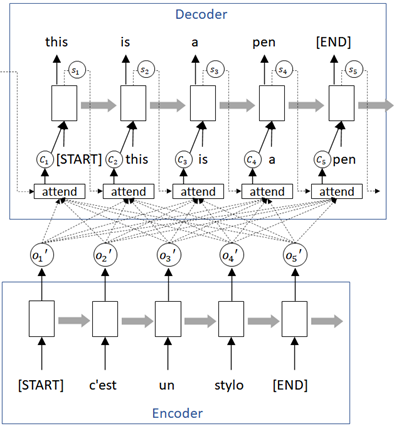
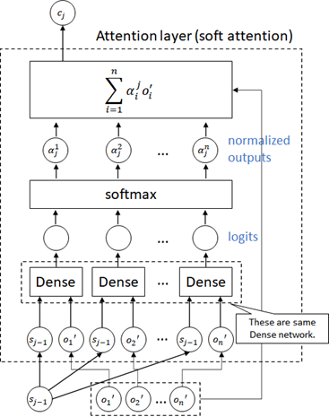
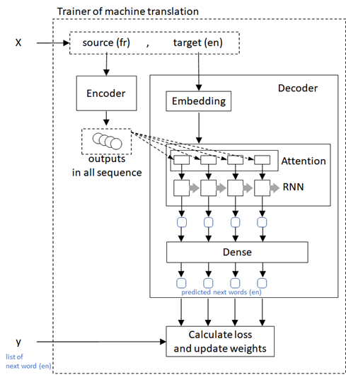
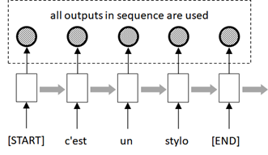
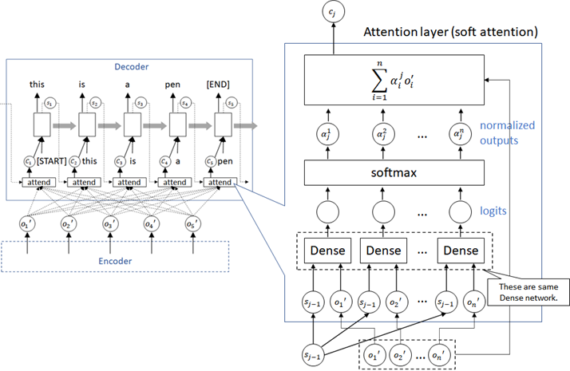

Attention#
(Machine Translation Example)
In the previous example, we saw sequence-to-sequence encoder-decoder architecture in machine translation.
In the previous example, the input sequence is encoded into a single context, and this context is used for decoding in all units in generated tokens.
👉 This architecture will not be flexible, and also not scalable.
For instance, in case of machine translation, it will be difficult to translate a long text (such as, translate multiple sentences at once) unlike human translation. (Because a single context will not be enough to represent entire text, when the text is so long.)
By introducing attention architecture, this constraint can be relaxed.
The attention is more elaborative and widely used architecture in today’s NLP, and a lot of tasks (such as, machine translation, smart reply, etc) are researched by adding attention mechanism and worked well today.
The overview outline of attention architecture is shown as follows.
In this network, the context c is computed and obtained in attention layer (attend in the following diagram) on decoder, and the different context is then used in each units in the sequence for decoding. (In the following diagram, each attend layer is the same network and then shares the weight’s parameters.)

👉 Within attention layer, it uses previous state and encoder’s outputs (not only final output, but outputs in all units), and it generates \(\{ \alpha_j^i \}\;(i=1,\ldots,n)\), in which \(\sum_i \alpha_j^i = 1\), with dense net (FCNet) and softmax activation, where \(n\) is the number of encoder’s outputs and \(j\) is time step in sequence. (See the following diagram.)
👉 To say in abstraction, \(\{ \alpha_j^i \}\;(i=1,\ldots,n)\) means an alignment’s weight at j-th time step for each source sequence outputs, \(o_1^{\prime}, o_2^{\prime}, \ldots, o_n^{\prime}\).
(This \(\{ \alpha_j^i \}\;(i=1,\ldots,n)\) is then called attention weights.)
Note : The softmax function is often used for normalizing outputs (sum to one) in neural networks. See here for softmax function.
And it finally generates context \(c_j\) at j-th time step by \( c_j = \sum_i^n \alpha_j^i \cdot o_i^{\prime} \).

💡 Note : This architecture is called soft attention, which is the first attention introduced in the context of sequence-to-sequence generation. (See Bahdanau et al.)
There exist a lot of variants in attention architecture. See the Transformers section for famous scaled dot-product attention (and self-attention) in transformer.
With this network, it can focus on specific components in source sequence.
For instance, in case of the following French-to-English machine translation, the 3rd units in sequence (“don’t” in English) will strongly focus on 3rd and 5th components in original sequence (French), because the word “don’t” will be strongly related to “ne” and “pas” in French.
On the other hand, the components “je” and “comprends” in French are weakly referred, because it’s not directly related to “don’t” in English, but it’s used only for determining not “doesn’t” or not “isn’t”.
As a result, the attention weights \(\{ \alpha_j^i \}\;(i=1,\ldots,n)\) will be larger for the source components “ne” and “pas”, and will be smaller for the source components “je” and “comprends”.

Install required packages#
Note : Currently torch 1.13.1 for cuda 11.4 has bugs (in which we can’t run
nn.Linearwithout_features=1) and we then use cuda 11.8 here.
!pip install torch==2.3.0 torchtext==0.18.0 --extra-index-url https://download.pytorch.org/whl/cu118
!pip install numpy nltk
Prepare data#
In this example, we will use Engligh-French dataset by Anki.
!wget http://www.manythings.org/anki/fra-eng.zip
--2023-02-17 13:37:35-- http://www.manythings.org/anki/fra-eng.zip
Resolving www.manythings.org (www.manythings.org)... 173.254.30.110
Connecting to www.manythings.org (www.manythings.org)|173.254.30.110|:80... connected.
HTTP request sent, awaiting response... 200 OK
Length: 6720195 (6.4M) [application/zip]
Saving to: ‘fra-eng.zip’
fra-eng.zip 100%[===================>] 6.41M 568KB/s in 15s
2023-02-17 13:37:51 (429 KB/s) - ‘fra-eng.zip’ saved [6720195/6720195]
!unzip fra-eng.zip -d fra-eng
Archive: fra-eng.zip
inflating: fra-eng/_about.txt
inflating: fra-eng/fra.txt
!head -n 5 fra-eng/fra.txt
Go. Va ! CC-BY 2.0 (France) Attribution: tatoeba.org #2877272 (CM) & #1158250 (Wittydev)
Go. Marche. CC-BY 2.0 (France) Attribution: tatoeba.org #2877272 (CM) & #8090732 (Micsmithel)
Go. En route ! CC-BY 2.0 (France) Attribution: tatoeba.org #2877272 (CM) & #8267435 (felix63)
Go. Bouge ! CC-BY 2.0 (France) Attribution: tatoeba.org #2877272 (CM) & #9022935 (Micsmithel)
Hi. Salut ! CC-BY 2.0 (France) Attribution: tatoeba.org #538123 (CM) & #509819 (Aiji)
!wc -l fra-eng/fra.txt
197463 fra-eng/fra.txt
from pathlib import Path
import numpy as np
pathobj = Path("fra-eng/fra.txt")
text_all = pathobj.read_text(encoding="utf-8")
lines = text_all.splitlines()
train_data = [line.split("\t") for line in lines]
train_data = np.array(train_data)[:,[1,0]]
# print first row
train_data[0]
array(['Va !', 'Go.'], dtype='<U349')
In this training set, text length in the latter part is longer (and includes multiple sentences) than the former part.
Therefore we will shuffle entire data.
np.random.shuffle(train_data)
train_data[0]
array(['Dis toujours la vérité.', 'Always tell the truth.'], dtype='<U349')
When data consists of multiple sentences, it converts to a single sentence.
import nltk
import nltk.data
nltk.download("punkt")
tokenizer_en = nltk.data.load("tokenizers/punkt/english.pickle")
tokenizer_fr = nltk.data.load("tokenizers/punkt/french.pickle")
fr_list = []
en_list = []
for x in train_data:
x1 = tokenizer_fr.tokenize(x[0])
x2 = tokenizer_en.tokenize(x[1])
if len(x1) == len(x2):
fr_list += x1
en_list += x2
train_data = np.column_stack((fr_list, en_list))
[nltk_data] Downloading package punkt to /home/tsmatz/nltk_data...
[nltk_data] Package punkt is already up-to-date!
To get the better performance (accuracy), I standarize the input text as follows.
Make all words to lowercase in order to reduce words
Make “-” (hyphen) to space
Remove all punctuation except “ ’ “ (e.g, Ken’s bag, ces’t, …)
import string
train_data = np.char.lower(train_data)
train_data = np.char.replace(train_data, "-", " ")
for x in string.punctuation.replace("'", ""):
train_data = np.char.replace(train_data, x, "")
for x in "«»":
train_data = np.char.replace(train_data, x, "")
train_data = np.char.strip(train_data)
# print first row
train_data[0]
array(['dis toujours la vérité', 'always tell the truth'], dtype='<U250')
Add <start> and <end> tokens in string.
train_data = np.array([[" ".join(["<start>", x, "<end>"]), " ".join(["<start>", y, "<end>"])] for x, y in train_data])
# print first row
train_data[0]
array(['<start> dis toujours la vérité <end>',
'<start> always tell the truth <end>'], dtype='<U264')
Generate sequence inputs#
We will generate the sequence of word’s indices (i.e, tokenize) from text.

First we create a list of vocabulary (vocab) for both source text (French) and target text (English) respectively.
from torchtext.data.utils import get_tokenizer
from torchtext.vocab import build_vocab_from_iterator
max_word = 10000
# create space-split tokenizer
tokenizer = get_tokenizer(None)
# define tokenization function
def yield_tokens(data):
for text in data:
tokens = tokenizer(text)
yield tokens
# build vocabulary list for French
vocab_fr = build_vocab_from_iterator(
yield_tokens(train_data[:,0]),
specials=["<unk>"],
max_tokens=max_word,
)
vocab_fr.set_default_index(vocab_fr["<unk>"])
# build vocabulary list for English
vocab_en = build_vocab_from_iterator(
yield_tokens(train_data[:,1]),
specials=["<unk>"],
max_tokens=max_word,
)
vocab_en.set_default_index(vocab_en["<unk>"])
The generated token index is 0, 1, ... , vocab_size - 1.
Now I set vocab_size as a token id in padded positions for both French and English respctively.
pad_index_fr = vocab_fr.__len__()
vocab_fr.append_token("<pad>")
pad_index_en = vocab_en.__len__()
vocab_en.append_token("<pad>")
Get list for both index-to-word and word-to-index.
itos_fr = vocab_fr.get_itos()
stoi_fr = vocab_fr.get_stoi()
itos_en = vocab_en.get_itos()
stoi_en = vocab_en.get_stoi()
# test
print("The number of token index in French (source) is {}.".format(vocab_fr.__len__()))
print("The padded index in French (source) is {}.".format(stoi_fr["<pad>"]))
print("The number of token index in English (target) is {}.".format(vocab_en.__len__()))
print("The padded index in English (target) is {}.".format(stoi_en["<pad>"]))
The number of token index in French (source) is 10001.
The padded index in French (source) is 10000.
The number of token index in English (target) is 10001.
The padded index in English (target) is 10000.
Now we build a collator function, which is used for pre-processing in data loader.
In this collator,
👉 First we create a list of word’s indices for source (French) and target (English) respectively as follows.
<start> this is pen <end> –> [2, 7, 5, 14, 1]
👉 For target (English) sequence, we separate into features (x) and labels (y).
In this task, we predict the next word in target (English) sequence using the current word’s sequence (English) and the encoded context of source (French).
We then separate target sequence into the sequence iteself (x) and the following label (y).
before :
[2, 7, 5, 14, 1]
after :
x : [2, 7, 5, 14, 1]
y : [7, 5, 14, 1, -100]
💡 Note : Here I set -100 as an unknown label id, because PyTorch cross-entropy function (torch.nn.functional.cross_entropy()) has a property ignore_index which default value is -100.
👉 Finally we pad the inputs (for both source and target) as follows.
The padded index in features is pad_index and the padded index in label is -100. (See above note.)
x : [2, 7, 5, 14, 1, N, ... , N]
y : [7, 5, 14, 1, -100, -100, ... , -100]
import torch
from torch.utils.data import DataLoader
seq_len_fr = 45
seq_len_en = 38
device = torch.device("cuda" if torch.cuda.is_available() else "cpu")
def collate_batch(batch):
label_list, feature_source_list, feature_target_list = [], [], []
for text_fr, text_en in batch:
# (1) tokenize to a list of word's indices
tokens_fr = vocab_fr(tokenizer(text_fr))
tokens_en = vocab_en(tokenizer(text_en))
# (2) separate into features and labels in target tokens (English)
y = tokens_en[1:]
y.append(-100)
# (3) limit length to seq_len and pad sequence
y = y[:seq_len_en]
tokens_fr = tokens_fr[:seq_len_fr]
tokens_en = tokens_en[:seq_len_en]
y += [-100] * (seq_len_en - len(y))
tokens_fr += [pad_index_fr] * (seq_len_fr - len(tokens_fr))
tokens_en += [pad_index_en] * (seq_len_en - len(tokens_en))
# add to list
label_list.append(y)
feature_source_list.append(tokens_fr)
feature_target_list.append(tokens_en)
# convert to tensor
label_list = torch.tensor(label_list, dtype=torch.int64).to(device)
feature_source_list = torch.tensor(feature_source_list, dtype=torch.int64).to(device)
feature_target_list = torch.tensor(feature_target_list, dtype=torch.int64).to(device)
return label_list, feature_source_list, feature_target_list
dataloader = DataLoader(
list(zip(train_data[:,0], train_data[:,1])),
batch_size=64,
shuffle=True,
collate_fn=collate_batch
)
# test
for labels, sources, targets in dataloader:
break
print("label shape in batch : {}".format(labels.size()))
print("feature source shape in batch : {}".format(sources.size()))
print("feature target shape in batch : {}".format(targets.size()))
print("***** label sample *****")
print(labels[0])
print("***** features (source) sample *****")
print(sources[0])
print("***** features (target) sample *****")
print(targets[0])
label shape in batch : torch.Size([64, 38])
feature source shape in batch : torch.Size([64, 45])
feature target shape in batch : torch.Size([64, 38])
***** label sample *****
tensor([ 3, 450, 112, 1, -100, -100, -100, -100, -100, -100, -100, -100,
-100, -100, -100, -100, -100, -100, -100, -100, -100, -100, -100, -100,
-100, -100, -100, -100, -100, -100, -100, -100, -100, -100, -100, -100,
-100, -100], device='cuda:0')
***** features (source) sample *****
tensor([ 2, 23, 624, 11, 103, 1, 10000, 10000, 10000, 10000,
10000, 10000, 10000, 10000, 10000, 10000, 10000, 10000, 10000, 10000,
10000, 10000, 10000, 10000, 10000, 10000, 10000, 10000, 10000, 10000,
10000, 10000, 10000, 10000, 10000, 10000, 10000, 10000, 10000, 10000,
10000, 10000, 10000, 10000, 10000], device='cuda:0')
***** features (target) sample *****
tensor([ 2, 3, 450, 112, 1, 10000, 10000, 10000, 10000, 10000,
10000, 10000, 10000, 10000, 10000, 10000, 10000, 10000, 10000, 10000,
10000, 10000, 10000, 10000, 10000, 10000, 10000, 10000, 10000, 10000,
10000, 10000, 10000, 10000, 10000, 10000, 10000, 10000],
device='cuda:0')
Build Network#
Now we build an attention model in encoder-decoder architecture as follows.
Outputs (not only final output, but all outputs in all units) in RNN for source French text are generated in encoder.
Encoder’s outputs are used in attention architecture and the result is passed into unit in decoder’s RNN.
Each RNN output in decoder is passed into dense (FCNet) layer and generate the sequence of next words.
Calculate loss between predicted next words and the true values of next words, and then proceed to optimize neural networks.

First, we will build encoder model.
See the previous examples for details about RNN inputs and outputs in PyTorch. (Here I also use packed sequence, because I want to process appropriate time-steps in each sequence.)
Unlike previous example (vanilla encoder-decoder example), all outputs in all units are used in the decoder, and the encoder should then return all outputs (not only the final output).

Note that the size of the following masks output is (batch_size, seq_len), in which its element’s value is 0 when it’s a padded position, and otherwise 1. (This masks will then be used in the following softmax operation in decoder side.)
import torch
import torch.nn as nn
embedding_dim = 256
rnn_units = 1024
class Encoder(nn.Module):
def __init__(self, vocab_size, seq_len, embedding_dim, rnn_units, padding_idx):
super().__init__()
self.seq_len = seq_len
self.padding_idx = padding_idx
self.embedding = nn.Embedding(
vocab_size,
embedding_dim,
padding_idx=padding_idx,
)
self.rnn = nn.GRU(
input_size=embedding_dim,
hidden_size=rnn_units,
num_layers=1,
batch_first=True,
)
def forward(self, inputs):
# embedding
# --> (batch_size, seq_len, embedding_dim)
outs = self.embedding(inputs)
# build "lengths" property to pack inputs (see previous example)
masks = (inputs != self.padding_idx).int()
lengths = masks.sum(dim=1, keepdim=False)
# pack inputs for RNN (see previous example)
packed_inputs = torch.nn.utils.rnn.pack_padded_sequence(
outs,
lengths.cpu(),
batch_first=True,
enforce_sorted=False,
)
# apply RNN
packed_outs, _ = self.rnn(packed_inputs)
# unpack results
# --> (batch_size, seq_len, rnn_units)
outs, _ = torch.nn.utils.rnn.pad_packed_sequence(
packed_outs,
batch_first=True,
padding_value=0.0,
total_length=self.seq_len,
)
return outs, masks
enc_model = Encoder(
vocab_size=vocab_fr.__len__(),
seq_len=seq_len_fr,
embedding_dim=embedding_dim,
rnn_units=rnn_units,
padding_idx=pad_index_fr).to(device)
Now we build decoder with attention architecture as follows.

👉 In each time-steps in target sequence, the state in previous step is used in computation of attention layer, and it repeats this process until the end of sequence. (See the following for loop.)
👉 In each steps, first, the previous state and encoder’s outputs are concatenated, and the results are passed into dense network (FCNet).
👉 By applying softmax function for this output, the attention weights \(\alpha\) (alpha in the following code) at j-th step are obtained. The context c at j-th step is then generated by \(\sum_i \alpha_i o_i^{\prime}\) where \(o_i^{\prime}\) is i-th element in encoder’s outputs.
In the following code, the padded elements in the softmax operation will be ignored (masked), because \(e^{-inf} = 0\).
👉 Once we get the context c, the subsequent steps are the same as previous example. (See previous example for details.)
from torch.nn import functional as F
class DecoderWithAttention(nn.Module):
def __init__(self, vocab_size, embedding_dim, rnn_units, padding_idx, hidden_dim1=1024, hidden_dim2=1024):
super().__init__()
self.padding_idx = padding_idx
self.rnn_units = rnn_units
# Below are used in attention layer
self.attention_dense1 = nn.Linear(rnn_units*2, hidden_dim1)
self.attention_dense2 = nn.Linear(hidden_dim1, 1)
# Below are used in other parts
self.embedding = nn.Embedding(
vocab_size,
embedding_dim,
padding_idx=padding_idx,
)
self.rnncell = nn.GRUCell(
input_size=rnn_units + embedding_dim,
hidden_size=rnn_units,
)
self.output_dense1 = nn.Linear(rnn_units, hidden_dim2)
self.output_dense2 = nn.Linear(hidden_dim2, vocab_size)
def forward(self, inputs, enc_outputs, enc_masks, states=None, return_states=False):
#
# get size
#
batch_size = inputs.size()[0]
dec_seq_size = inputs.size()[1]
enc_seq_size = enc_outputs.size()[1]
#
# set initial states
#
if states is None:
current_states = torch.zeros((batch_size, self.rnn_units)).to(device)
else:
current_states = states
# loop target sequence
# [Note] Here I loop in all time-steps, but please filter
# for saving resource's consumption.
# (Sort batch, run by filtering, and turn into original position.)
rnn_outputs = []
for j in range(dec_seq_size):
#
# process attention
#
# --> (batch_size, 1, rnn_units)
current_states_reshaped = current_states.unsqueeze(dim=1)
# --> (batch_size, enc_seq_size, rnn_units)
current_states_reshaped = current_states_reshaped.expand(-1, enc_seq_size, -1)
# concat
# --> (batch_size, enc_seq_size, rnn_units * 2)
enc_and_states = torch.concat((current_states_reshaped, enc_outputs), dim=-1)
# apply dense
# --> (batch_size, enc_seq_size, 1)
alpha = self.attention_dense1(enc_and_states)
alpha = F.relu(alpha)
alpha = self.attention_dense2(alpha)
# --> (batch_size, enc_seq_size)
alpha = alpha.squeeze(dim=2)
# apply masked softmax
alpha = alpha.masked_fill(enc_masks == 0, float("-inf"))
alpha = F.softmax(alpha, dim=-1)
# get context
# --> (batch_size, rnn_units)
c = torch.einsum("bs,bsu->bu", alpha, enc_outputs)
#
# process rnn
#
# embedding
# --> (batch_size, embedding_dim)
emb_j = self.embedding(inputs[:,j])
# concat
# --> (batch_size, rnn_units + embedding_dim)
input_j = torch.concat((c, emb_j), dim=-1)
# apply rnn (proceed to the next state)
current_states = self.rnncell(input_j, current_states)
# append state
rnn_outputs.append(current_states)
#
# process outputs
#
# get output state's tensor
# --> (batch_size, dec_seq_size, rnn_units)
rnn_outputs = torch.stack(rnn_outputs, dim=1)
# apply dense
# --> (batch_size, dec_seq_size, vocab_size)
outs = self.output_dense1(rnn_outputs)
outs = F.relu(outs)
logits = self.output_dense2(outs)
# return results
if return_states:
# set 0.0 in padded position
masks = (inputs != self.padding_idx).int()
masks = masks.unsqueeze(dim=2)
masks = masks.expand(-1, -1, self.rnn_units)
rnn_outputs = rnn_outputs.masked_fill(masks == 0, 0.0)
return logits, rnn_outputs # This is used in prediction
else:
return logits # This is used in training
dec_model = DecoderWithAttention(
vocab_size=vocab_en.__len__(),
embedding_dim=embedding_dim,
rnn_units=rnn_units,
padding_idx=pad_index_en).to(device)
Train#
Now we put it all together and run training.
The loss on label id=-100 is ignored in cross_entropy() function. The padded position and the end of sequence will then be ignored in optimization.
Note : Because the default value of
ignore_indexproperty incross_entropy()function is -100. (You can change this default value.)
num_epochs = 5
all_params = list(enc_model.parameters()) + list(dec_model.parameters())
optimizer = torch.optim.AdamW(all_params, lr=0.001)
for epoch in range(num_epochs):
for labels, sources, targets in dataloader:
# optimize
optimizer.zero_grad()
enc_outputs, enc_masks = enc_model(sources)
logits = dec_model(targets, enc_outputs, enc_masks)
loss = F.cross_entropy(logits.transpose(1,2), labels)
loss.backward()
optimizer.step()
# calculate accuracy
pred_labels = logits.argmax(dim=2)
num_correct = (pred_labels == labels).float().sum()
num_total = (labels != -100).float().sum()
accuracy = num_correct / num_total
print("Epoch {} - loss: {:2.4f} - accuracy: {:2.4f}".format(epoch+1, loss.item(), accuracy), end="\r")
print("")
Epoch 1 - loss: 1.8736 - accuracy: 0.6900
Epoch 2 - loss: 1.8001 - accuracy: 0.6667
Epoch 3 - loss: 0.7754 - accuracy: 0.8667
Epoch 4 - loss: 0.1816 - accuracy: 0.9286
Epoch 5 - loss: 0.7531 - accuracy: 0.8333
Translate Text#
Now translate French text to English text with trained model. (All these sentences are not in training set.)
Here I simply translate several brief sentences, but the metrics to evaluate text-generation task will not be so easy. (Because simply checking an exact match to a reference text is not optimal.)
To eveluate the trained model, use some common metrics available in text generation, such as, BLEU or ROUGE.
Note : Here I use greedy search and this will sometimes lead to wrong sequence. For drawbacks and solutions, see note in this example.
import numpy as np
end_index_en = stoi_en["<end>"]
max_output = 128
def translate(sentence):
# preprocess inputs
text_fr = sentence
text_fr = text_fr.lower()
text_fr = " ".join(["<start>", text_fr, "<end>"])
text_en = "<start>"
_, tokens_fr, tokens_en = collate_batch(list(zip([text_fr], [text_en])))
# process encoder
enc_outputs, enc_masks = enc_model(tokens_fr)
# process decoder
final_state = None
for loop in range(max_output):
logits, states = dec_model(
tokens_en,
enc_outputs,
enc_masks,
states=final_state,
return_states=True)
final_state = states[0][0].unsqueeze(dim=0)
pred_idx_en = logits[0][0].argmax()
next_word_en = itos_en[pred_idx_en]
text_en += " "
text_en += next_word_en
if pred_idx_en.item() == end_index_en:
break
_, _, tokens_en = collate_batch(list(zip(["<end>"], [next_word_en])))
return text_en
print(translate("j'aime la guitare")) # i like guitar
print(translate("il vit au japon")) # he lives in Japan
print(translate("ce stylo est utilisé par lui")) # this pen is used by him
print(translate("c'est ma chanson préférée")) # that's my favorite song
print(translate("il conduit une voiture et va à new york")) # he drives a car and goes to new york
<start> i like the guitar <end>
<start> he lives in japan <end>
<start> this pen is used to him <end>
<start> that's my favorite song <end>
<start> he drives a car and goes to new york <end>